Code
library(tidyverse)
library(tidytext)
library(qdapRegex )
library(EnvStats)
library(ggpubr)
library(univOutl)Load in packages
library(tidyverse)
library(tidytext)
library(qdapRegex )
library(EnvStats)
library(ggpubr)
library(univOutl)The data preprocessing for this data set and that of the character matching in data set 2 is slightly different. Whereas that data set had to manually modified to align with the DY database, this data set is fuller and is a slightly less adulterated version of punctuation patterns in Faulkner. That said, it would be a mistake to suggest that this is the more “correct” version. It includes more texts.
all_works_original <-
list.files(file.path("data"), full.names = TRUE, pattern = "*.txt") %>% #grab a list of all the files with .txt extension
#the full.names value needs to set to TRUE to get the full path. For some reason you will get a "permission denied" error if you do not do this.
map_df(~ tibble( #the map function performs the same command on all parts of the data set. In this case the .txt files
text = read_file(.), #read the files
date = ifelse(
str_detect(basename(.), "[:digit:]{4}") == TRUE,
str_extract(basename(.), "[:digit:]{4}"),
NA), #see if there is a date in yyyy format, i.e. 1987, and extract the date, if it can't find date NA
title=str_extract(basename(.), "(?<=_)[:alpha:]*"),
code=str_extract(basename(.), "[:upper:]+"),
revised = str_detect(basename(.),"_revised")
)) There are various features of the text files that cause issues with determining sentence length. They are abbreviations, titles with a period such as Mr. and Mrs., and ellipses. These have all been edited, so that the sentences in each text can be properly delimited.
all_works_tidy_string_original <- all_works_original %>%
group_by(title, date, code) %>%
mutate(text = rm_abbreviation(text, replacement = "abbreviationremoved ")) %>%
mutate(text = str_replace_all(text, "Mr\\.", "Mr ")) %>%
mutate(text = str_replace_all(text, "Mrs\\.", "Mrs ")) %>%
mutate(text = str_replace_all (text, "\\.\\.\\.", " punctellipse ")) %>%
mutate(text = str_replace_all (text, "\\.\\s\\.\\s\\.\\s", " punctellipse ")) %>%
mutate(text = str_replace_all(text, "\u2026", " punctellipse ")) %>%
mutate(text = str_squish(text)) %>%
mutate(text = str_replace_all(text, "—", " - ")) %>%
mutate(work_length = str_count(text, "\\S+")) %>%
mutate(type = ifelse(work_length > 40000, "novel", "short_story")) %>%
mutate(cleaned = str_to_lower(text)) revised_works_percent <- all_works_tidy_string_original %>%
group_by(revised) %>%
summarise(work_length=sum(work_length)) %>%
mutate(percent= work_length/(sum(work_length)))The relative make up of the corpus by text type.
#Descriptive statistics. These are used in the introduction to the essay.
#This calculates the percentage breakdown of the corpus. All functions have been left verbose for clarity.
corpus_percent_novel_short_story <- all_works_tidy_string_original %>%
group_by(type) %>%
summarise (work_type_length = sum(work_length)) %>%
ungroup() %>%
mutate(percent = work_type_length / sum(work_type_length))
corpus_percent_novel_short_story %>%
select(-work_type_length)# A tibble: 2 × 2
type percent
<chr> <dbl>
1 novel 0.768
2 short_story 0.232corpus_percent_dy_nondy <- all_works_tidy_string_original %>%
mutate(type = ifelse(code == "ZZ", "notDY", "DY")) %>%
group_by(type) %>%
summarise (work_type_length = sum(work_length)) %>%
ungroup() %>%
mutate(percent = work_type_length / sum(work_type_length))
corpus_percent_dy_nondy# A tibble: 2 × 3
type work_type_length percent
<chr> <int> <dbl>
1 DY 1909505 0.709
2 notDY 785318 0.291corpus_percent_all <- corpus_percent_novel_short_story %>%
bind_rows(corpus_percent_dy_nondy)
corpus_percent_all# A tibble: 4 × 3
type work_type_length percent
<chr> <int> <dbl>
1 novel 2069683 0.768
2 short_story 625140 0.232
3 DY 1909505 0.709
4 notDY 785318 0.291#Create sentences using regex unnest. This works better than unnest_sentences in tidytext library, which drops all columns.
all_works_punctuation <-
all_works_tidy_string_original %>%
ungroup() %>%
group_by(title, date, code, type, revised) %>%
unnest_regex(sentence, cleaned, "[.?!]") %>%
mutate(sentence = str_replace(sentence, "”(?=\\s{1})", "")) %>%
mutate (string_length = str_count(sentence, "\\S+")) %>%
filter(string_length > 0) %>%
mutate(ellipse = str_count(sentence, "punctellipse")) %>%
mutate(comma = str_count(sentence, "\\,")) %>%
mutate(semi_colon = str_count(sentence, "\\;")) %>%
mutate(dash = str_count(sentence, "-")) %>%
mutate(colon = str_count(sentence, "\\:")) %>%
mutate(parenthesis = str_count(sentence, "[\\(\\)]"))
# Even though it takes up unnecessary memory the sentence column is maintained to verify that the sentences are being parsed correctly.# These calculations were used to get a sense of how much duplicated text there is between GDM and the stories and likewise Unvanquished and the stories. This is not a whole lot.
all_works_punctuation_duplicate <- all_works_punctuation %>%
ungroup() %>%
count(sentence) %>%
filter(n>1)
all_works_unique_removed <- all_works_punctuation %>%
right_join(all_works_punctuation_duplicate) %>%
group_by(title) %>%
distinct(sentence, .keep_all = TRUE)Joining with `by = join_by(sentence)`duplicate_sentences <- all_works_unique_removed %>%
arrange(desc(string_length), sentence) %>%
filter(string_length>6) %>%
ungroup() %>%
distinct(sentence,string_length) %>%
summarise(total_duplicates= sum(string_length))
percent_duplicate <- duplicate_sentences %>%
mutate(duplicate_percent = total_duplicates/sum(revised_works_percent$work_length))Create punctuation table and remove Requiem because the punctuation patterns do not match that of a novel. This table is used continuously downstream. It produces the relative frequencies of punctuation in the corpus.
# Create punctuation table and remove Requiem because the punctuation patterns do not match that of a novel. This table is used continuously downstream. It produces the relative frequencies of punctuation in the corpus.
summary_punctuation <- all_works_punctuation %>%
group_by(title, date, code, type) %>%
filter(title != 'requiem') %>%
summarise(across(string_length:parenthesis, ~ mean(.x))) `summarise()` has grouped output by 'title', 'date', 'code'. You can override
using the `.groups` argument.summary_punctuation %>% slice_max(10)# A tibble: 112 × 11
# Groups: title, date, code [112]
title date code type string_length ellipse comma semi_colon dash colon
<chr> <chr> <chr> <chr> <dbl> <dbl> <dbl> <dbl> <dbl> <dbl>
1 Lo 1934 L shor… 15.3 0.0646 1.02 0.108 0.0604 0.0854
2 absal… 1936 AA novel 43.1 0.00192 2.38 0.285 0.504 0.238
3 adang… 1930 ZZ shor… 15.8 0.00513 1.14 0.108 0.179 0.0462
4 adast… 1931 AD shor… 11.2 0.0153 0.812 0.0826 0.0505 0.0260
5 adole… 1922 ZZ shor… 15.8 0.00826 1.08 0.129 0.129 0.0854
6 after… 1947 ZZ shor… 29.4 0 1.75 0.169 0.305 0.0519
7 aljac… 1925 ZZ shor… 19.2 0 0.955 0.0536 0.107 0.0804
8 allth… 1931 ADP shor… 15.8 0.00688 1.03 0.0436 0.0665 0.0459
9 ambus… 1934 AMB shor… 12.1 0.00855 0.765 0.0919 0.109 0.0321
10 aretu… 1938 ZZ shor… 23.3 0.0113 1.28 0.0994 0.235 0.0750
# ℹ 102 more rows
# ℹ 1 more variable: parenthesis <dbl>This calculates the percent long sentences for each work. A long sentence is any sentence that exceeds the corpus average.
#This calculates the percent long sentences for each work. A long sentence is any sentence that exceeds the corpus average (corpus_mean_string_length)
sentence_length_by_work <- all_works_punctuation %>%
group_by(title, code) %>%
summarise(average_string_length = mean(string_length))`summarise()` has grouped output by 'title'. You can override using the
`.groups` argument.corpus_mean_string_length <- sentence_length_by_work %>%
ungroup() %>%
summarise(corpus_mean_string_length = mean(average_string_length)) %>%
pull(corpus_mean_string_length)
sentence_length_percentage <- mean(sentence_length_by_work$average_string_length > corpus_mean_string_length)
sentence_long_short_percent <- all_works_punctuation %>%
group_by(title, code) %>%
summarise(
all_sentence = n(),
long_sentences = sum(string_length > corpus_mean_string_length)
) %>%
mutate(percent_long = long_sentences / all_sentence)`summarise()` has grouped output by 'title'. You can override using the
`.groups` argument.sentence_long_short_percent# A tibble: 113 × 5
# Groups: title [113]
title code all_sentence long_sentences percent_long
<chr> <chr> <int> <int> <dbl>
1 Lo L 480 140 0.292
2 absalomcorrect AA 3130 1595 0.510
3 adangerousman ZZ 195 65 0.333
4 adastra AD 654 129 0.197
5 adolesence ZZ 363 149 0.410
6 afternooncow ZZ 154 83 0.539
7 aljackson ZZ 112 49 0.438
8 allthedeadpilots ADP 436 143 0.328
9 ambuscade AMB 468 112 0.239
10 areturn ZZ 533 175 0.328
# ℹ 103 more rowsThe following procedures were all performed on the various punctuation-marks. The results were, in turn, consolidated into one table, which was used in the paper.
summary_punctuation %>%
ggplot(aes(x=string_length)) +
geom_histogram(aes(y=after_stat(density)), colour="black", fill="white")+
geom_density(alpha=.2, fill="#FF6666")+
ggtitle("String Length Distribution")`stat_bin()` using `bins = 30`. Pick better value with `binwidth`.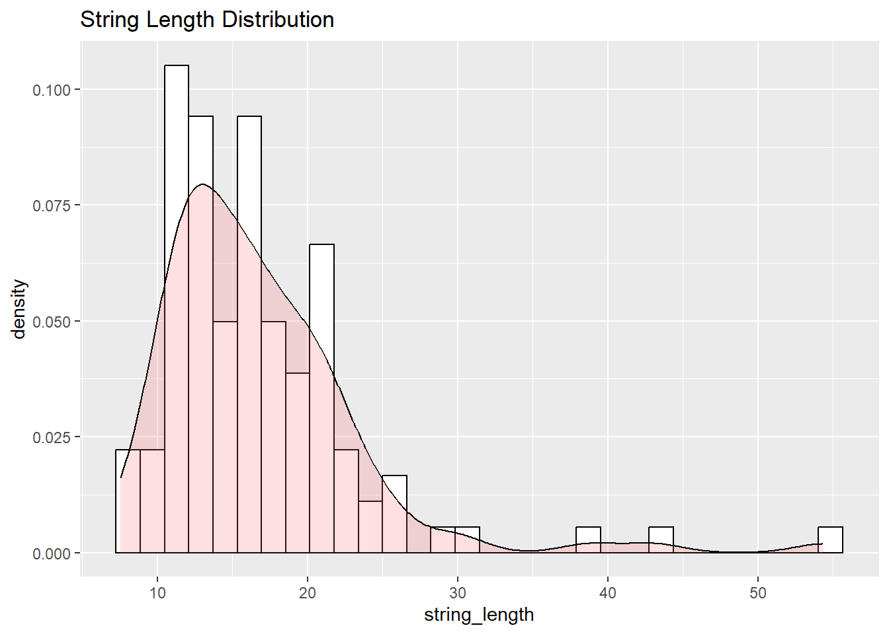
string_length_shapiro <- shapiro.test(log1p(summary_punctuation$string_length))
ggqqplot(log1p(summary_punctuation$string_length), xlab = "Text", title = paste("String Length Distribution", "Shapiro P value < ", round(string_length_shapiro$p.value,6))
)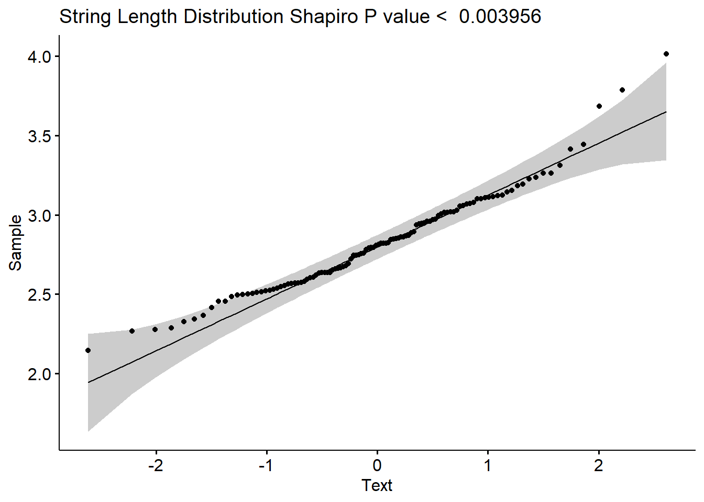
string_length_outlier <- boxplot.stats(log1p(summary_punctuation$string_length))$out
string_length_outlier_rownumbers <- which(log1p(summary_punctuation$string_length) %in% c(string_length_outlier))
string_length_test <- rosnerTest(log1p(summary_punctuation$string_length),
k = length(string_length_outlier_rownumbers)
)
string_length_outlier_obs <- string_length_test$all.stats %>%
filter(Outlier ==TRUE) %>%
select(Obs.Num)
#Write value to punctuation results
string_length_outlier_result <- summary_punctuation[string_length_outlier_obs$Obs.Num,] %>%
ungroup() %>%
select(title, string_length)string_length_adjusted_boxplot <-
boxB(summary_punctuation$string_length, method = "adjbox")Warning in boxB(summary_punctuation$string_length, method = "adjbox"): With
method='adjbox' the argument k is set equal to 1.5The default of 'doScale' is FALSE now for stability;
set options(mc_doScale_quiet=TRUE) to suppress this (once per session) messageThe MedCouple skewness measure is: 0.107No. of outliers in left tail: 0No. of outliers in right tail: 3string_length_boxplot_outlier_result <-
summary_punctuation[string_length_adjusted_boxplot$outliers, ] %>%
ungroup() %>%
select(title, string_length)summary_punctuation %>%
ggplot(aes(x = ellipse)) +
geom_histogram(aes(y = ..density..),
colour = "black",
fill = "white") +
geom_density(alpha = .2, fill = "#FF6666") +
ggtitle("Ellipse Distribution")Warning: The dot-dot notation (`..density..`) was deprecated in ggplot2 3.4.0.
ℹ Please use `after_stat(density)` instead.`stat_bin()` using `bins = 30`. Pick better value with `binwidth`.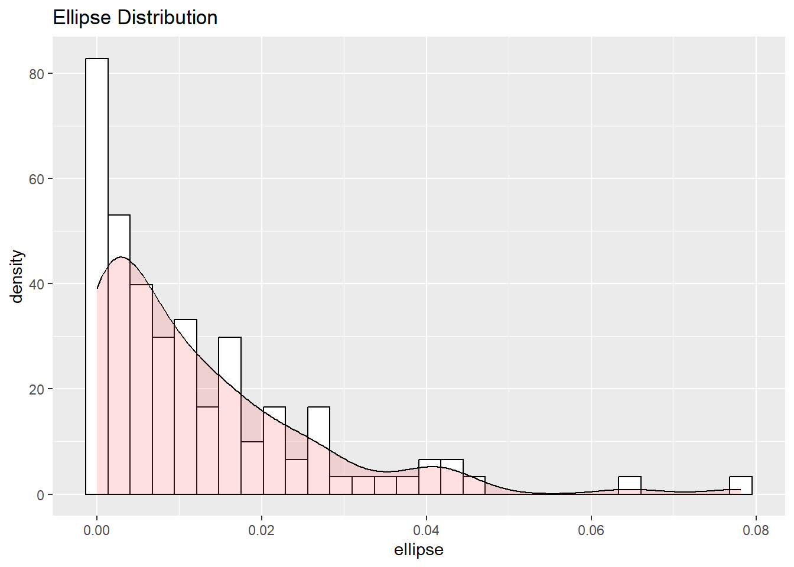
ellipse_shapiro <- shapiro.test(1/summary_punctuation$ellipse)
ggqqplot(
log1p(summary_punctuation$ellipse),
xlab = "Text",
title = paste(
"Ellipse Distribution",
"Shapiro P value < ",
round(ellipse_shapiro$p.value, 6)
)
)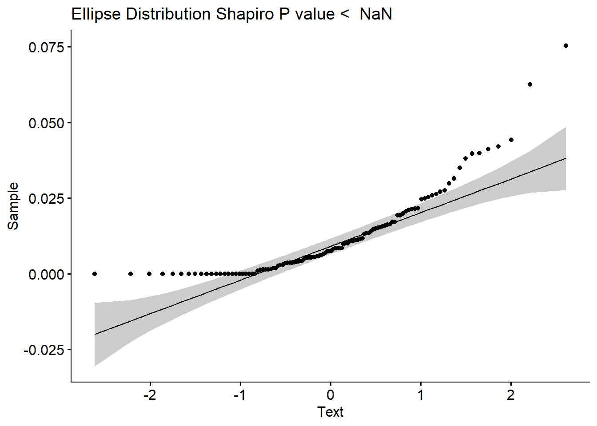
#I tried working with the inverse here, but got mixed results. It pulls out all the low observations as unusual instead of simply seeing them as zero. It looks like both with the lognormal and the regular the top still clusters as outliers. This makes logically the most sense even if the data is pretty noisy and it is unclear how much value to attach to this.
ellipse_outlier <-
boxplot.stats(log1p(summary_punctuation$ellipse))$out
ellipse_outlier_rownumbers <-
which((log1p(summary_punctuation$ellipse)) %in% c(ellipse_outlier))
ellipse_test <- rosnerTest((log1p(summary_punctuation$ellipse)),
k = length(ellipse_outlier_rownumbers))
ellipse_outlier_obs <- ellipse_test$all.stats %>%
filter(Outlier == TRUE) %>%
select(Obs.Num)
ellipse_outlier_result <-
summary_punctuation[ellipse_outlier_obs$Obs.Num, ] %>%
ungroup() %>%
select(title, ellipse)ellipse_adjusted_boxplot <-
boxB(summary_punctuation$ellipse, method = "adjbox")Warning in boxB(summary_punctuation$ellipse, method = "adjbox"): With
method='adjbox' the argument k is set equal to 1.5The MedCouple skewness measure is: 0.3513No outliers foundellipse_boxplot_outlier_result <-
summary_punctuation[ellipse_adjusted_boxplot$outliers, ] %>%
ungroup() %>%
select(title, ellipse)#Simple test to verify the most numerous result. As suspected, the top 5 are somewhat unexpected.
summary_punctuation %>%
ungroup() %>%
# slice_max(ellipse,n=10) %>%
ggplot( aes(x=date, y=ellipse)) +
geom_bar(stat = "identity",position = position_dodge2(preserve = "single"))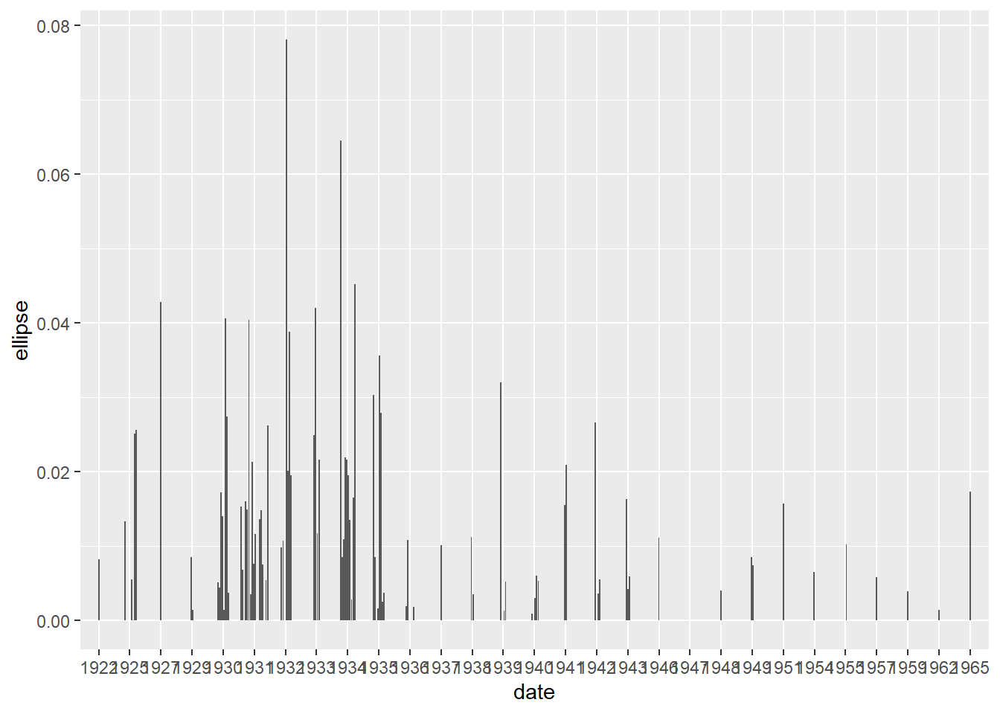
# correlation_ellipse_short_story <- summary_punctuation %>%
# filter(ellipse>0) %>%
# with(cor.test(date, ellipse))
#
# correlation_ellipse_short_storysummary_punctuation %>%
ggplot(aes(x = comma)) +
geom_histogram(aes(y = ..density..),
colour = "black",
fill = "white") +
geom_density(alpha = .2, fill = "#FF6666") +
ggtitle("comma Distribution")`stat_bin()` using `bins = 30`. Pick better value with `binwidth`.
comma_shapiro <- shapiro.test(summary_punctuation$ellipse)
ggqqplot(summary_punctuation$comma, xlab = "Text", title = paste("Comma Distribution", "Shapiro P value < ", round(comma_shapiro$p.value,6))
)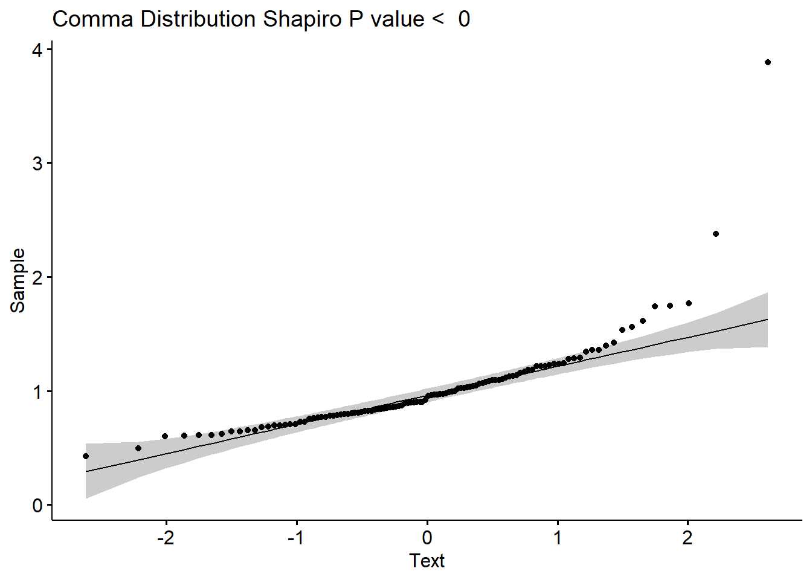
comma_outlier <- boxplot.stats(summary_punctuation$comma)$out
comma_outlier_rownumbers <-
which(summary_punctuation$comma %in% c(comma_outlier))
comma_test <- rosnerTest(summary_punctuation$comma,
k = length(comma_outlier_rownumbers))
comma_outlier_obs <- comma_test$all.stats %>%
filter(Outlier == TRUE) %>%
select(Obs.Num)
comma_outlier_result <- summary_punctuation[comma_outlier_obs$Obs.Num,] %>%
ungroup() %>%
select(title, comma)comma_adjusted_boxplot <-
boxB(summary_punctuation$comma, method = "adjbox")Warning in boxB(summary_punctuation$comma, method = "adjbox"): With
method='adjbox' the argument k is set equal to 1.5The MedCouple skewness measure is: 0.1514No. of outliers in left tail: 2No. of outliers in right tail: 2comma_boxplot_outlier_result <-
summary_punctuation[comma_adjusted_boxplot$outliers, ] %>%
ungroup() %>%
select(title, comma)summary_punctuation %>%
ggplot(aes(x = semi_colon)) +
geom_histogram(aes(y = ..density..),
colour = "black",
fill = "white") +
geom_density(alpha = .2, fill = "#FF6666") +
ggtitle("Semi-Colon Distribution")`stat_bin()` using `bins = 30`. Pick better value with `binwidth`.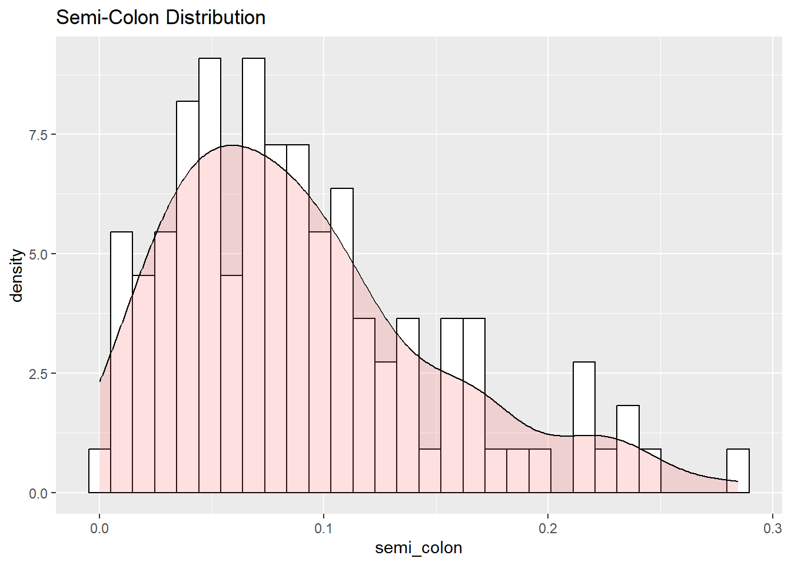
semi_colon_shapiro <- shapiro.test(summary_punctuation$semi_colon)
ggqqplot(
log1p(summary_punctuation$semi_colon),
xlab = "Text",
title = paste(
"Semi-Colon's Per Word",
"Shapiro P value < ",
round(semi_colon_shapiro$p.value, 6)
)
)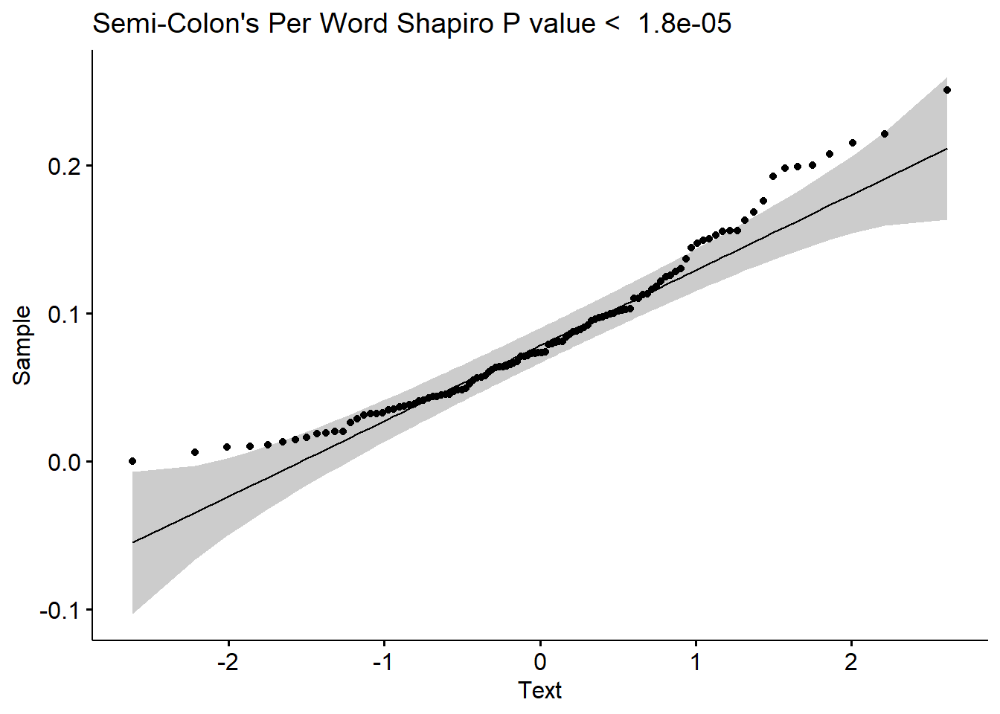
semi_colon_outlier <-
boxplot.stats(log1p(summary_punctuation$semi_colon))$out
semi_colon_outlier_rownumbers <-
which(log1p(summary_punctuation$semi_colon) %in% c(semi_colon_outlier))
semi_colon_test <- rosnerTest(log1p(summary_punctuation$semi_colon),
k = length(semi_colon_outlier_rownumbers))
semi_colon_outlier_obs <- semi_colon_test$all.stats %>%
filter(Outlier == TRUE) %>%
select(Obs.Num)
semi_colon_outlier_result <-
summary_punctuation[semi_colon_outlier_obs$Obs.Num, ] %>%
ungroup() %>%
select(title, semi_colon)semi_colon_adjusted_boxplot <- boxB(summary_punctuation$semi_colon, method="adjbox")Warning in boxB(summary_punctuation$semi_colon, method = "adjbox"): With
method='adjbox' the argument k is set equal to 1.5The MedCouple skewness measure is: 0.2435No. of outliers in left tail: 1No. of outliers in right tail: 0semi_colon_boxplot_outlier_result <- summary_punctuation[semi_colon_adjusted_boxplot$outliers,] %>%
ungroup() %>%
select(title, semi_colon)summary_punctuation %>%
ggplot(aes(x=dash)) +
geom_histogram(aes(y=..density..), colour="black", fill="white")+
geom_density(alpha=.2, fill="#FF6666")+
ggtitle("Dash Distribution")`stat_bin()` using `bins = 30`. Pick better value with `binwidth`.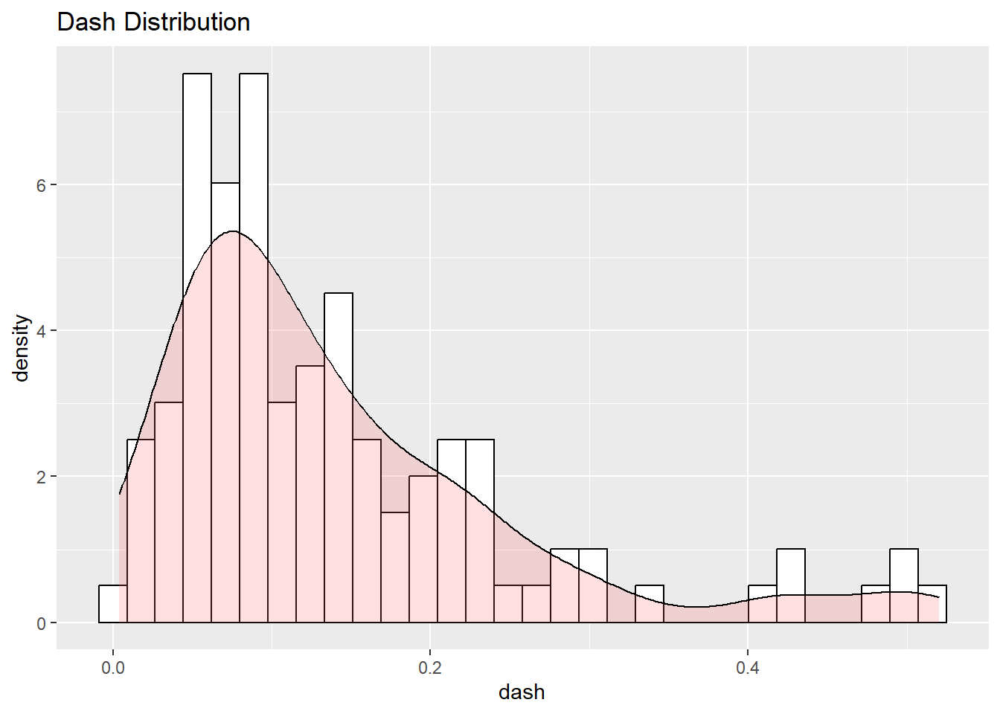
dash_shapiro <- shapiro.test(log1p(summary_punctuation$dash))
ggqqplot(log1p(summary_punctuation$dash), xlab = "Text", title = paste("Dashes Per Word", "Shapiro P value < ", round(dash_shapiro$p.value,6))
)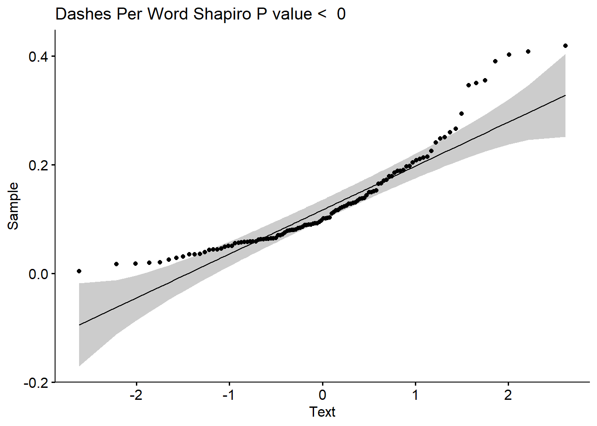
dash_outlier <- boxplot.stats(log1p(summary_punctuation$dash))$out
dash_outlier_rownumbers <- which(log1p(summary_punctuation$dash) %in% c(dash_outlier))
dash_test <- rosnerTest(log1p(summary_punctuation$dash),
k = length(dash_outlier_rownumbers)
)
dash_outlier_obs <- dash_test$all.stats %>%
filter(Outlier ==TRUE) %>%
select(Obs.Num)
dash_outlier_result <- summary_punctuation[dash_outlier_obs$Obs.Num,] %>%
ungroup() %>%
select(title, dash)dash_adjusted_boxplot <- boxB(summary_punctuation$dash, method="adjbox")Warning in boxB(summary_punctuation$dash, method = "adjbox"): With
method='adjbox' the argument k is set equal to 1.5The MedCouple skewness measure is: 0.3637No. of outliers in left tail: 5No. of outliers in right tail: 0dash_boxplot_outlier_result <- summary_punctuation[dash_adjusted_boxplot$outliers,] %>%
ungroup() %>%
select(title, dash)summary_punctuation %>%
ggplot(aes(x = colon)) +
geom_histogram(aes(y=..density..), colour="black", fill="white")+
geom_density(alpha=.2, fill="#FF6666")+
ggtitle("Colon Distribution")`stat_bin()` using `bins = 30`. Pick better value with `binwidth`.
colon_shapiro <- shapiro.test(1/summary_punctuation$colon)
ggqqplot(log1p(summary_punctuation$colon), xlab = "Text", title = paste("Colons Per Word", "Shapiro P value < ", round(colon_shapiro$p.value,6))
)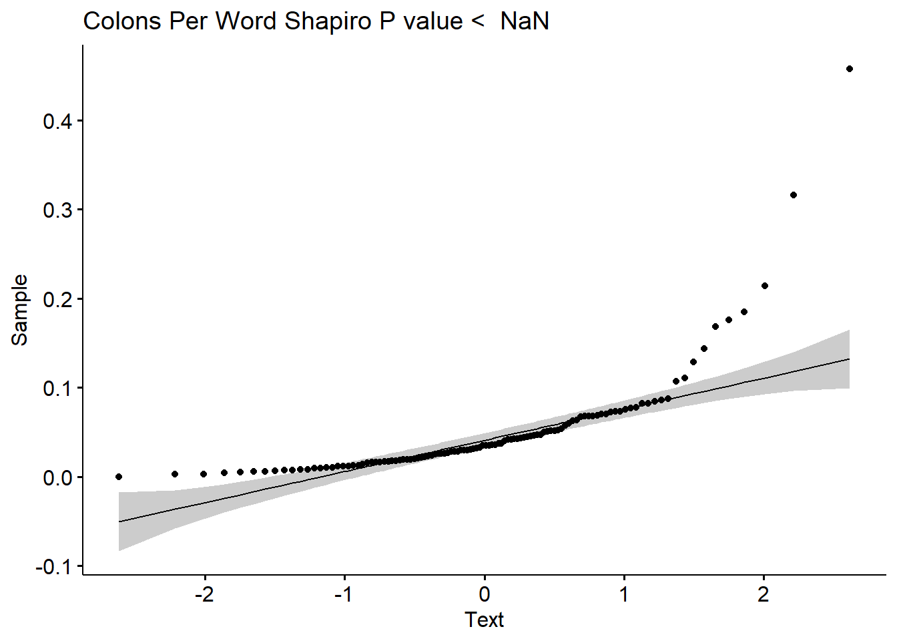
colon_outlier <- boxplot.stats(log1p(summary_punctuation$colon))$out
colon_outlier_rownumbers <- which(log1p(summary_punctuation$colon) %in% c(colon_outlier))
colon_test <- rosnerTest(log1p(summary_punctuation$colon),
k = length(colon_outlier_rownumbers)
)
colon_outlier_obs <- colon_test$all.stats %>%
filter(Outlier ==TRUE) %>%
select(Obs.Num)
colon_outlier_result <- summary_punctuation[colon_outlier_obs$Obs.Num,] %>%
ungroup() %>%
select(title, colon)colon_adjusted_boxplot <- boxB(summary_punctuation$colon, method="adjbox")Warning in boxB(summary_punctuation$colon, method = "adjbox"): With
method='adjbox' the argument k is set equal to 1.5The MedCouple skewness measure is: 0.2636No. of outliers in left tail: 0No. of outliers in right tail: 3colon_boxplot_outlier_result <- summary_punctuation[colon_adjusted_boxplot$outliers,] %>%
ungroup() %>%
select(title, colon)summary_punctuation %>%
ggplot(aes(x = parenthesis)) +
geom_histogram(aes(y=..density..), colour="black", fill="white")+
geom_density(alpha=.2, fill="#FF6666")+
ggtitle("Parenthesis Distribution")`stat_bin()` using `bins = 30`. Pick better value with `binwidth`.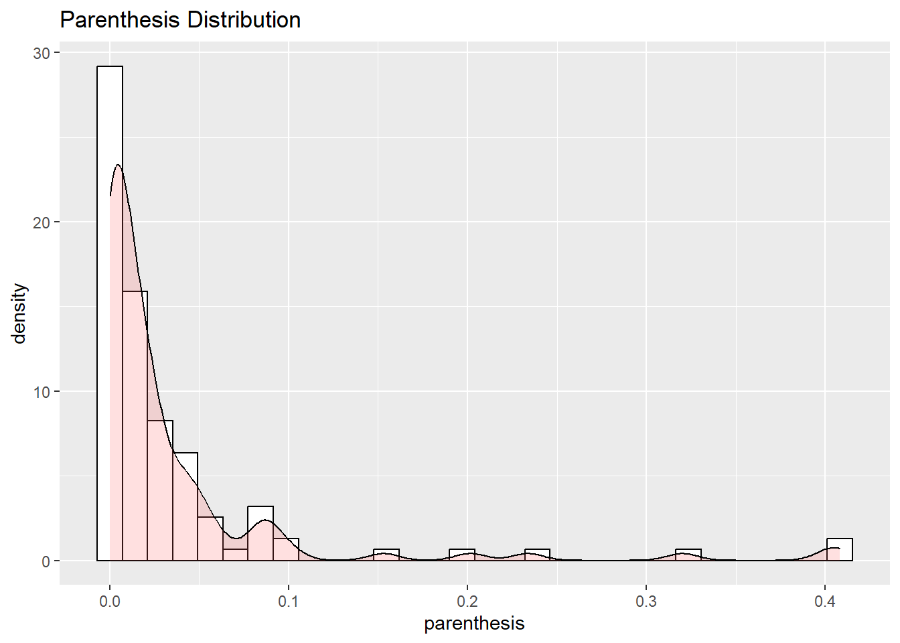
parenthesis_shapiro <- shapiro.test(log1p(summary_punctuation$parenthesis))
ggqqplot(log1p(summary_punctuation$parenthesis), xlab = "Text", title = paste("parenthesiss Per Word", "Shapiro P value < ", round(parenthesis_shapiro$p.value,6))
)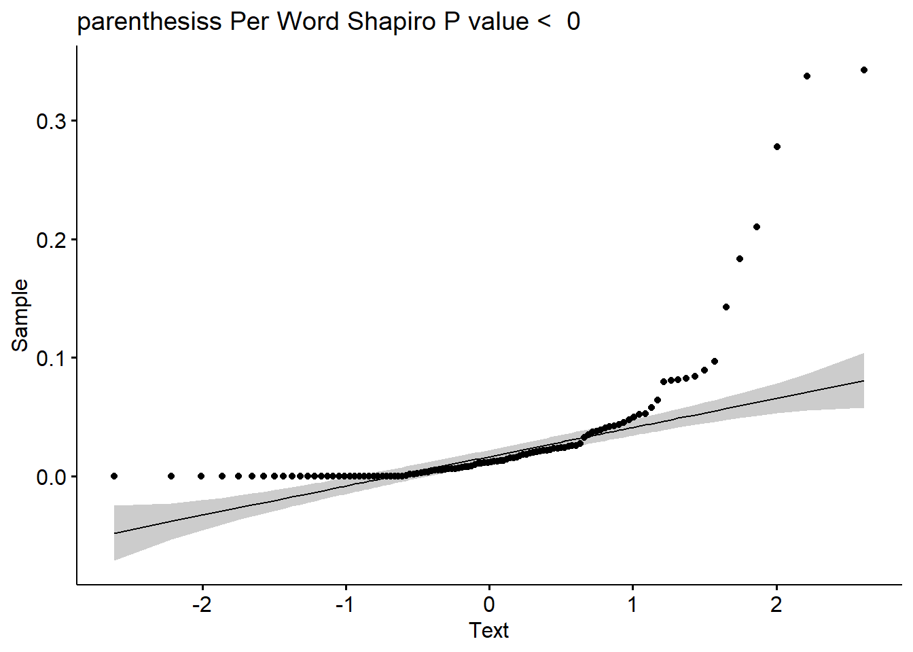
parenthesis_outlier <- boxplot.stats(log1p(summary_punctuation$parenthesis))$out
parenthesis_outlier_rownumbers <- which(log1p(summary_punctuation$parenthesis) %in% c(parenthesis_outlier))
parenthesis_test <- rosnerTest(log1p(summary_punctuation$parenthesis),
k = length(parenthesis_outlier_rownumbers)
)
parenthesis_outlier_obs <- parenthesis_test$all.stats %>%
filter(Outlier ==TRUE) %>%
select(Obs.Num)
parenthesis_outlier_result <- summary_punctuation[parenthesis_outlier_obs$Obs.Num,] %>%
ungroup() %>%
select(title, parenthesis)parenthesis_adjusted_boxplot <- boxB(summary_punctuation$parenthesis, method="adjbox")Warning in boxB(summary_punctuation$parenthesis, method = "adjbox"): With
method='adjbox' the argument k is set equal to 1.5The MedCouple skewness measure is: 0.4385No. of outliers in left tail: 0No. of outliers in right tail: 4parenthesis_boxplot_outlier_result <- summary_punctuation[parenthesis_adjusted_boxplot$outliers,] %>%
ungroup() %>%
select(title, parenthesis)punctuation_results <- summary_punctuation %>%
select(title:type)# Create punctuation result
punctuation_results_full_table <- NULL
punctuation_results_full_table <- punctuation_results %>%
left_join(string_length_outlier_result, by = join_by(title)) %>%
rename(string_length_rosner = string_length) %>%
left_join(string_length_boxplot_outlier_result, by = join_by(title)) %>%
rename(string_length_boxplot = string_length) %>%
left_join(ellipse_outlier_result, by = join_by(title)) %>%
rename(ellipse_rosner = ellipse) %>%
left_join(ellipse_boxplot_outlier_result, by = join_by(title)) %>%
rename(ellipse_boxplot = ellipse) %>%
left_join(comma_outlier_result, by = join_by(title)) %>%
rename(comma_rosner = comma) %>%
left_join(comma_boxplot_outlier_result, by = join_by(title)) %>%
rename(comma_boxplot = comma) %>%
left_join(semi_colon_outlier_result, by = join_by(title)) %>%
rename(semi_colon_rosner = semi_colon) %>%
left_join(semi_colon_boxplot_outlier_result, by = join_by(title)) %>%
rename(semi_colon_boxplot = semi_colon) %>%
left_join(dash_outlier_result, by = join_by(title)) %>%
rename(dash_rosner = dash) %>%
left_join(dash_boxplot_outlier_result, by = join_by(title)) %>%
rename(dash_boxplot = dash) %>%
left_join(colon_outlier_result, by = join_by(title)) %>%
rename(colon_rosner = colon) %>%
left_join(colon_boxplot_outlier_result, by = join_by(title)) %>%
rename(colon_boxplot = colon) %>%
left_join(parenthesis_outlier_result, by = join_by(title)) %>%
rename(parenthesis_rosner = parenthesis) %>%
left_join(parenthesis_boxplot_outlier_result, by = join_by(title)) %>%
rename(parenthesis_boxplot = parenthesis)all_outliers <- punctuation_results_full_table %>%
rowwise() %>%
mutate(outlier = sum(c_across(where(is.numeric)), na.rm = T)) %>%
mutate(outlier = ifelse(outlier>0,TRUE,FALSE)) %>%
filter(outlier == TRUE) %>%
mutate_at(c(8,11), as.numeric)all_outliers_count <- all_outliers %>%
select(5:18) %>%
is.na %>%
`!` %>%
rowSumsAdding missing grouping variables: `title`, `date`, `code`all_outliers_count <- all_outliers %>%
add_column(all_outliers_count)
all_outliers_count# A tibble: 16 × 20
# Rowwise: title, date, code
title date code type string_length_rosner string_length_boxplot
<chr> <chr> <chr> <chr> <dbl> <dbl>
1 Lo 1934 L shor… NA NA
2 absalomcorrect 1936 AA novel NA 43.1
3 afternooncow 1947 ZZ shor… NA NA
4 beyond 1933 BE shor… NA NA
5 elly 1934 ELY shor… NA NA
6 fable 1954 ZZ novel NA NA
7 hogpawn 1955 ZZ shor… NA NA
8 intruder 1949 ID novel NA 38.8
9 misszilphiagant 1932 MZG shor… NA NA
10 mistral 1931 ZZ shor… NA NA
11 requiemcorrected 1951 RQ novel NA NA
12 sepulturesouth 1954 ZZ shor… 54.3 54.3
13 soundcorrected 1929 SF novel NA NA
14 thateveningsun 1931 TES shor… NA NA
15 thepriest 1925 ZZ shor… NA NA
16 twodollarwife 1936 ZZ shor… NA NA
# ℹ 14 more variables: ellipse_rosner <dbl>, ellipse_boxplot <dbl>,
# comma_rosner <dbl>, comma_boxplot <dbl>, semi_colon_rosner <dbl>,
# semi_colon_boxplot <dbl>, dash_rosner <dbl>, dash_boxplot <dbl>,
# colon_rosner <dbl>, colon_boxplot <dbl>, parenthesis_rosner <dbl>,
# parenthesis_boxplot <dbl>, outlier <lgl>, all_outliers_count <dbl>